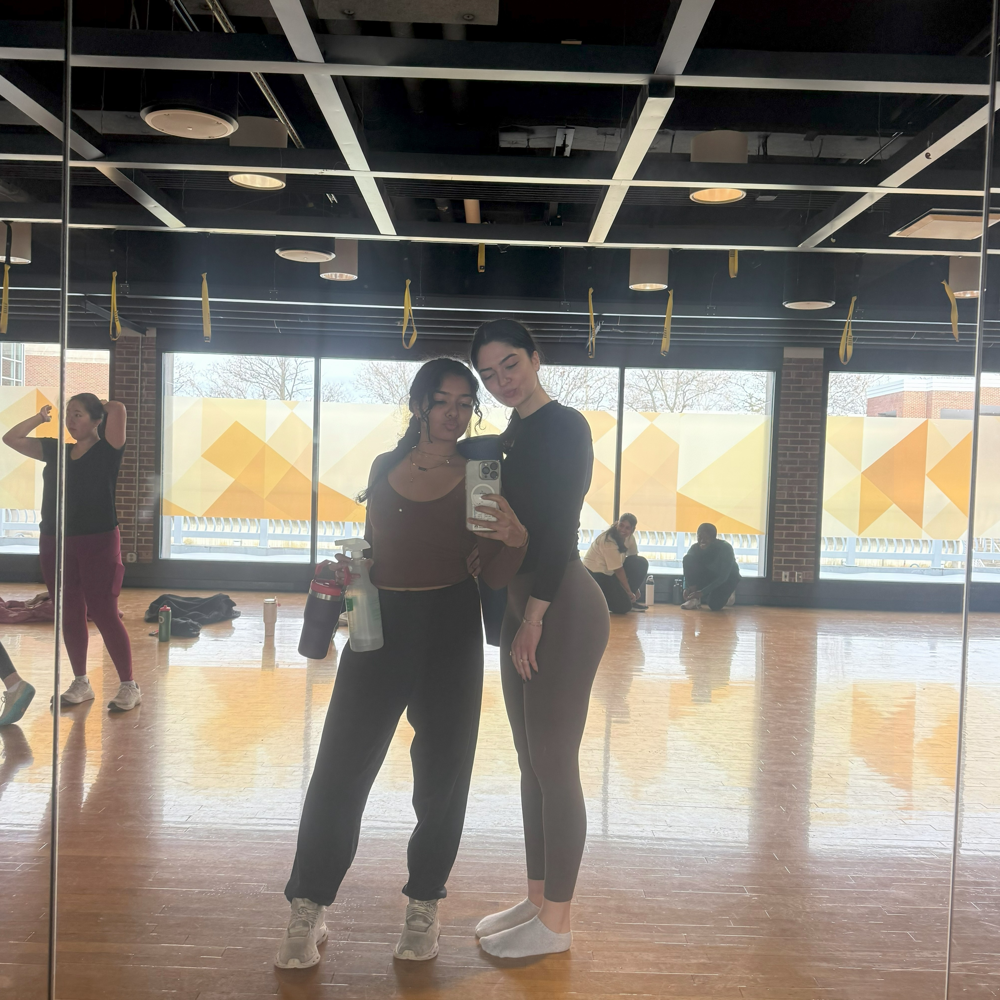
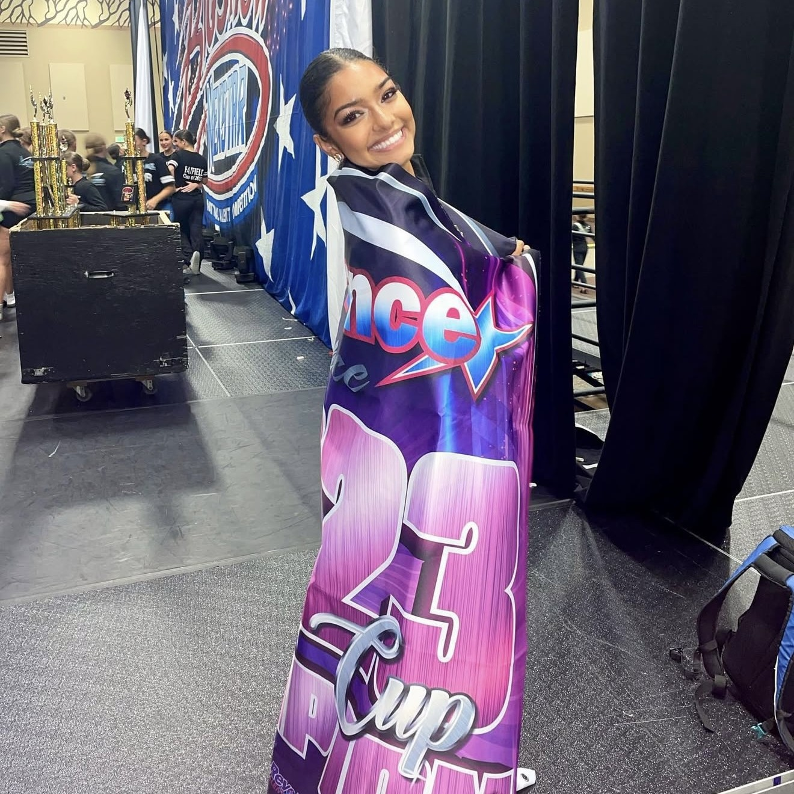
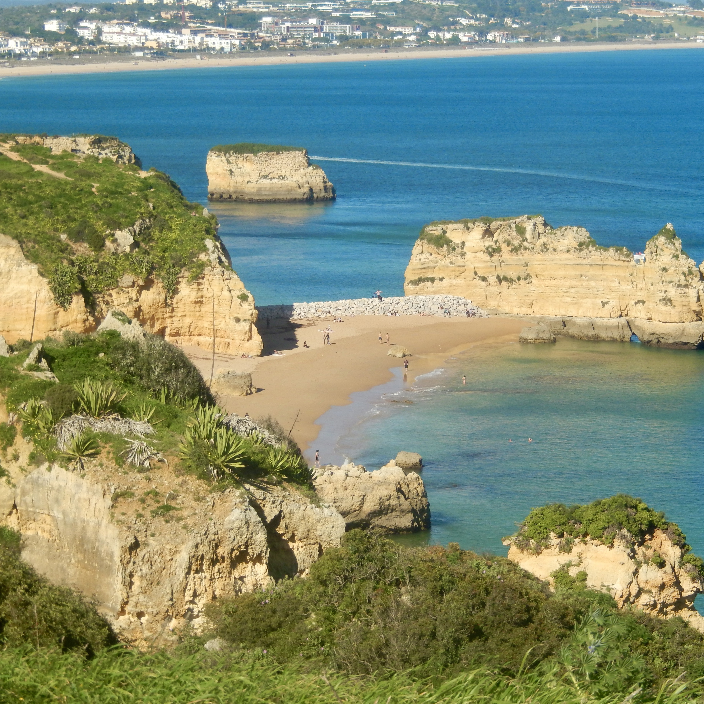
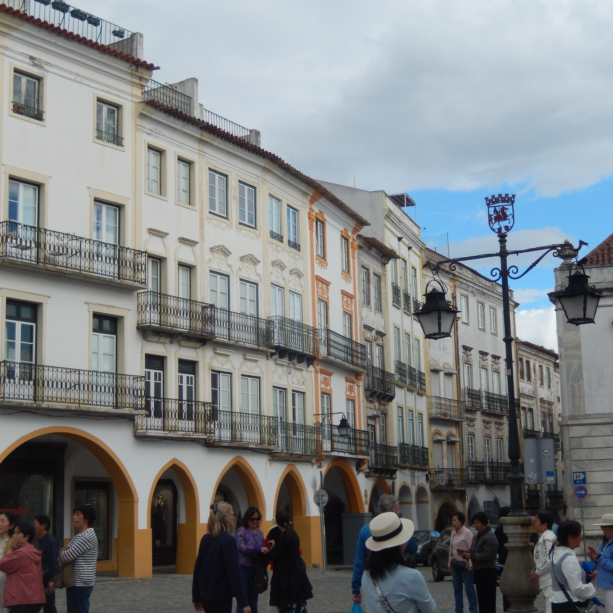
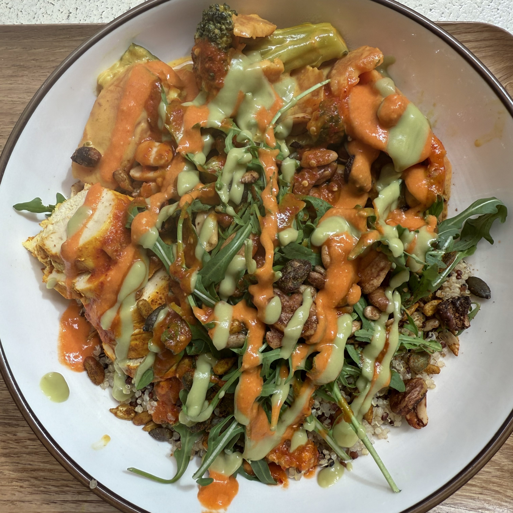
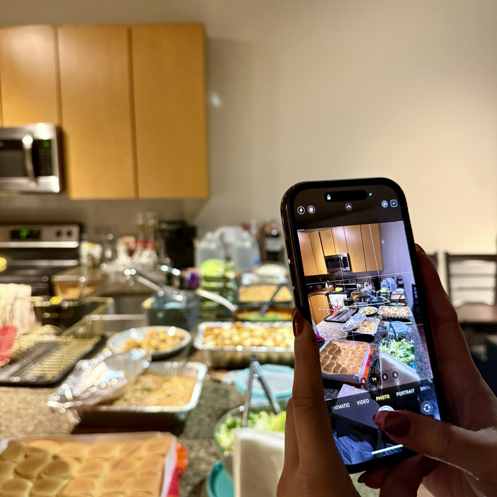

outside of work
Things that make me, me.
From dance and hot yoga to backpacking and cooking, I love finding ways to stay creative, active, and curious.
Dance
Dance has been a part of my life for years. I grew up competing in dance throughout high school, including at national competitions, and I have also practiced classical Indian dance. It taught me discipline, confidence, and how much I value creative expression.
Yoga
Hot yoga has become one of my favorite ways to stay active and reset. I love the combination of movement, balance, and focus, and I hope to take that passion further by pursuing yoga teacher training in Bali.


Travel
Traveling is one of my favorite ways to learn about new places, cultures, and people. I backpacked through eight cities in Portugal over two weeks, and after graduation I plan to continue exploring through a backpacking trip across Southeast Asia.


Cooking
Cooking is one of the ways I slow down and be creative. I especially love making Thai food and trying new recipes. I also enjoy hosting potlucks with friends because food gives me an excuse to bring people together.

